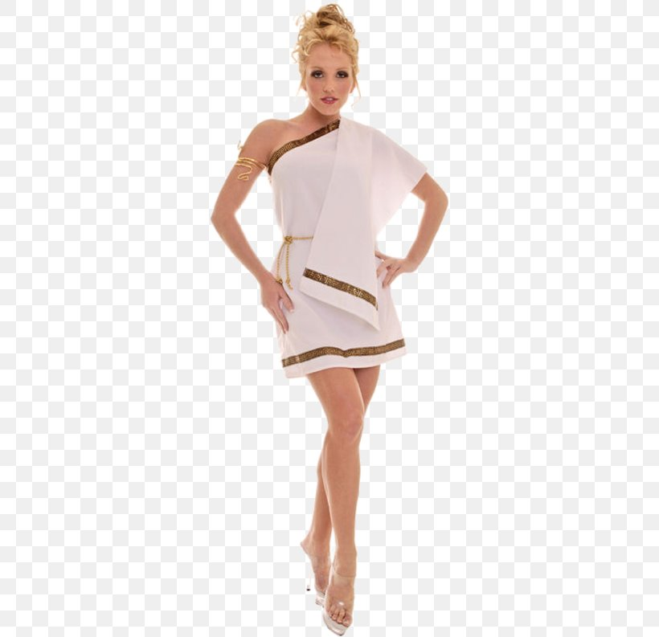

LIFESTYLE OF ROME
SPORTS
-The first team of ROme city is called AS ROMA which competes in the Seria A League, is it is a striving team which fight ever year to try and win the League. Not only is it Football teams, People in Rome consider Fishing a sport. Hunting and Fishing: Hunting was one of the oldest and most popular sports among the Roman elite, and boys often accompanied their fathers on hunting expeditions in order to teach them marksmanship. In the country, fishing was among the favorite pastimes.
Wine creation and Tasting
It has become a norm in Rome that tourists and residents go to wineries for some fine wineries. there are a couple of them like the My Casteli Romani, Fattoria di Fiorani, Deli Rome etc.
FOOD FESTIVALS.
Roma is mostly known for many things, but when it comes to food, they take it seriously. Pasta is one of their favorite food and they even hold food festivals to compete, thus increasing companionship of the Romans. Festivals like Spaghettongola: Pasta alle vongole lupino, Sagra dei Cecapreti e della Bufaletta Sagra delle Fettuccine alla Trebulana occur from time time
Each year on March 15, or the Ides of March, Rome marks the anniversary of Julius Caesar’s untimely death with a period reenactment. Caesar was one of Rome's most important dictators and he was murdered by his own senators during a meeting in 44 BC near the Largo Argentina archeological site. This unique event sees dozens of actors and actresses dress up in Roman togas and engage in animated discussions before dealing Julius Caesar the final blow
Clothing Toga The toga was a long robe made up of several yards of material.
The wealthy wore white togas made from wool or linen. Some colors and markings
on togas were reserved for certain people and certain occasions.
now it has been reformed and it reformed into a background.

this occurs to be new brand of the actient Toga clothing.
And is not just this only, there are many other things
and clothes that Roman create